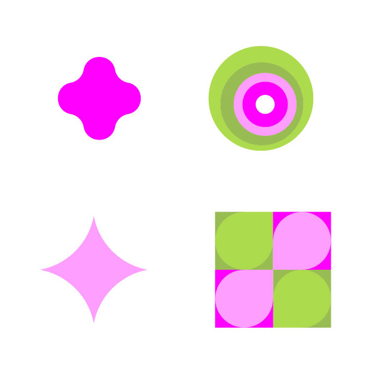
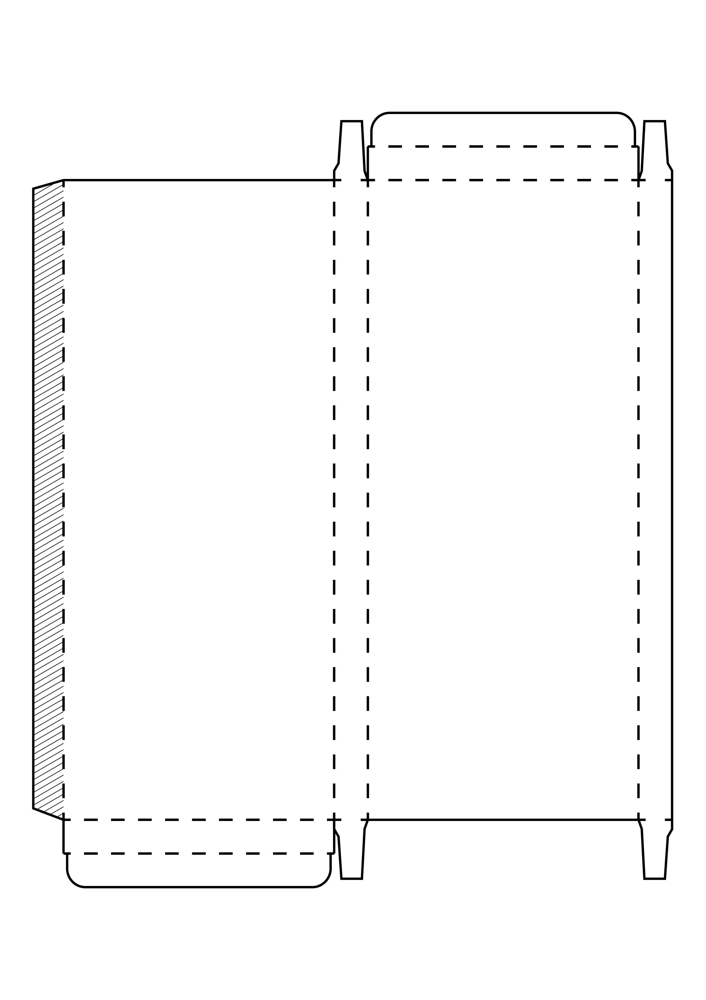
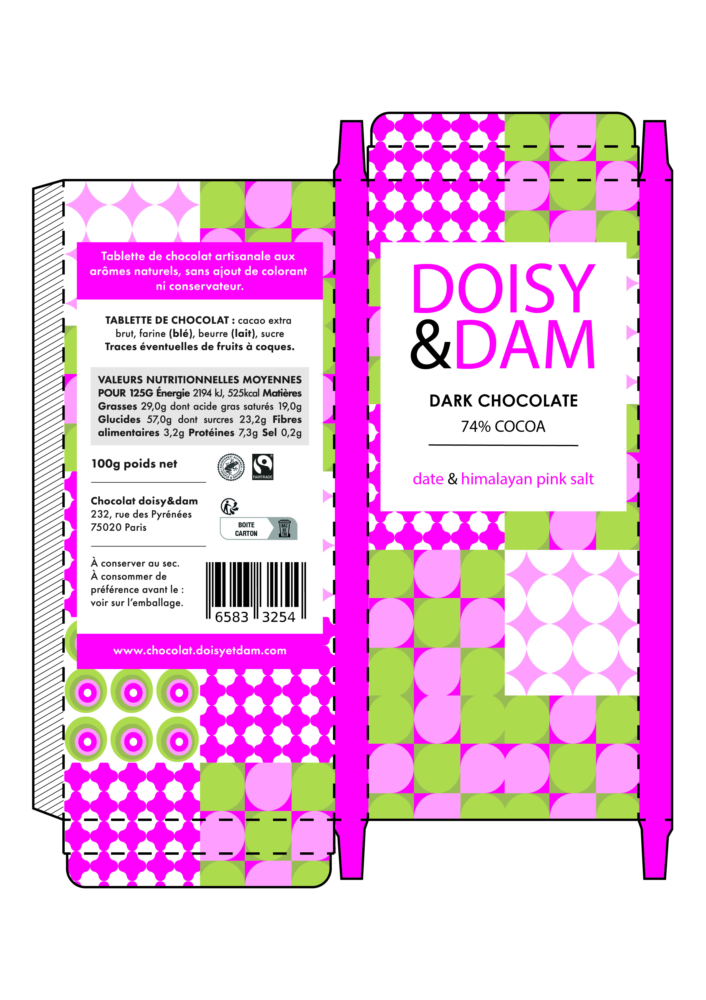
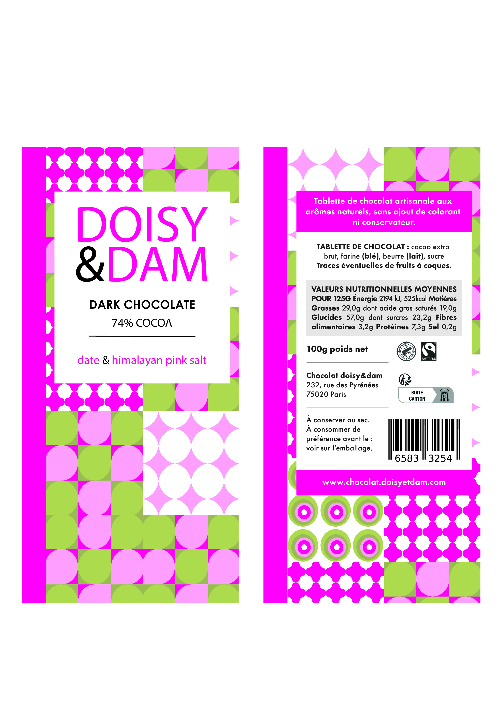
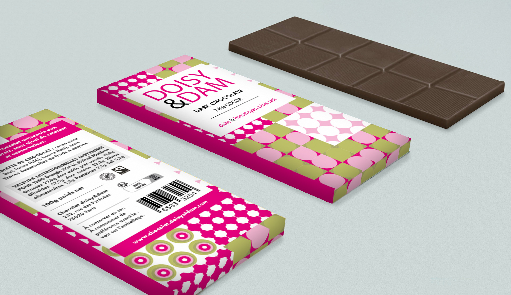

Le Brief
Réalisation de motifs destinés à un packaging.
J’ai d’abord créé quatre motifs, puis réalisé le patron avant de produire le mockup final.
Réalisation de motifs destinés à un packaging.
J’ai d’abord créé quatre motifs, puis réalisé le patron avant de produire le mockup final.
J’ai créé quatre motifs en m’appuyant sur des formes géométriques simples. J’ai choisi une palette rose et vert pour apporter un contraste doux et dynamique, adapté à un packaging attractif.

J’ai réalisé le patron en respectant les dimensions ainsi que les zones de pliage et de découpe. J’ai ensuite appliqué les motifs grâce à un script permettant de les répartir de manière irrégulière, afin de créer un design dynamique et attractif pour le packaging. Enfin, j’ai ajouté les étiquettes et les informations nécessaires en veillant à leur bonne intégration dans la composition globale.


J’ai conservé la face avant et arrière du packaging pour réaliser le mockup final. J’ai utilisé la perspective afin de positionner les éléments de manière réaliste sur le modèle 3D, en veillant à l’alignement et aux proportions des motifs et des étiquettes pour obtenir un rendu professionnel et attractif.

